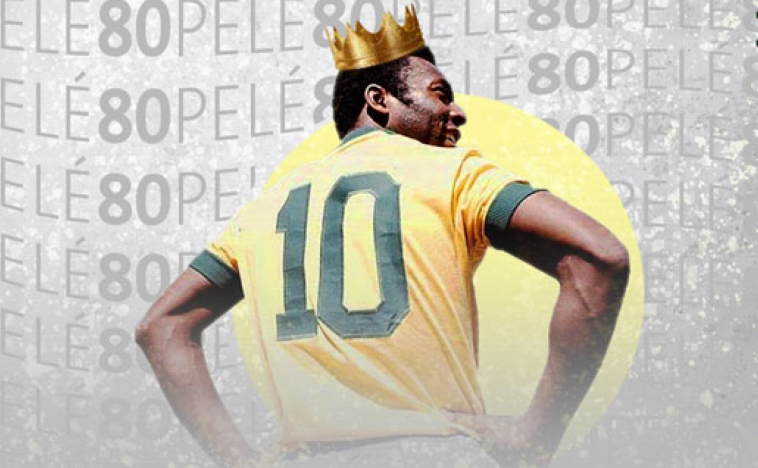

O Rei Pelé
O maior atleta de todos os tempos.

Pelé com a camisa 10 da Seleção Brasileira e a Coroa de Rei.
Aqui está uma linha do tempo da vida do Pelé:
- 1940 - Nasce em Três Corações, Minas Gerais - Brasil, Édison Arantes do Nascimento.
- 1945 - Ganhou o apelido de Pelé.
- 1951 - Pela primeira vez, Pelé calçou um par de chuteiras.
- 1956 - Assinou seu primeiro contrato profissional com o Santos Futebol Clube.
- 1957 - Estreou na Seleção Brasileira, contra a Seleção Argentina e marcou seu primeiro gol com a camisa da seleção.
- 1958 - Conquista sua primeira Copa do Mundo, na primeira vez jogando o torneio.
- 1962 - Conquista sua segunda Copa do Mundo.
- 1968 - A Rainha Elizabeth, da Inglaterra, aplaude Pelé em pleno estadio do Maracanã.
- 1969 - Pelé chega a marca o milesimo gol da carreira.
- 1970 - Pelé e companhia conquista o tricampeonato para o Brasil.
- 1971 - Último ano em que Pelé jogou pela Seleção Brasileira.
- 1975 - Foi a Casa Branca conhecer o presidente dos EUA, Gerald Ford.
- 1977 - Fez seu último jogo como profissional pelo Santos Futebol Clube.
- 1981 - Eleito o "Atleta do Século" pelo jornal L'Equipe com retificação de 650 jornalistas especialistas mundiais.
- 1994 - Como comentarista, narra o tetracampeonato da Seleção Brasileira.
- 2004 - Teve o documentario "Pelé Eterno" estreado e narrado pelo próprio.
- 2016 - Pelé é eleito pelo Comitê Olímpico Internacional como o maior atleta de todos os tempos.
Nasci no futebol como Beethoven para a música e Michelangelo para a pintura.
-- Édison Arantes do Nascimento, o Péle.
Se você se interessou pela história do Rei do futebol, saiba mais em Wikipedia.